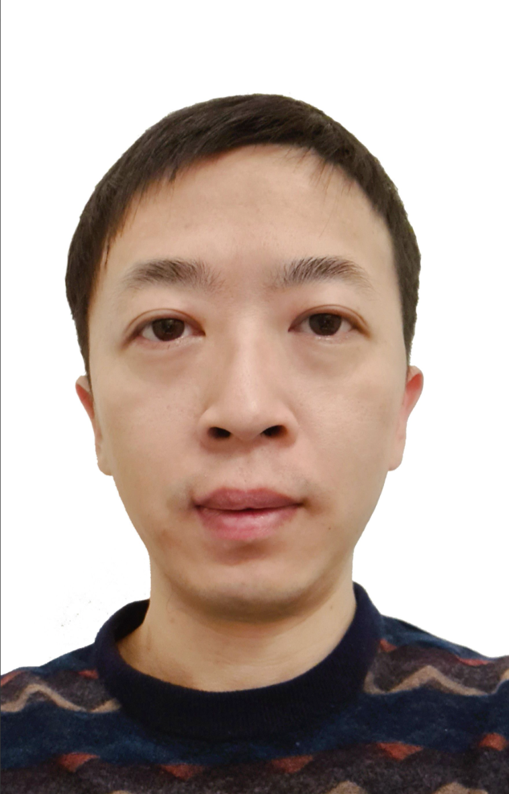

Keynote Speakers
Keynote 1: WiFi-CSI Difference Paradigm for Accurate Doppler and AoA Estimation
Speaker: Daqing Zhang (IP Paris and Peking University)
Abstract: Doppler and AoA estimation are fundamental to passive sensing/tracking/localization using narrow-band WiFi/4G/5G wireless signals. Despite various methods proposed, existing approaches remain susceptible to varying interference from multipath and random noise, making robust estimation challenging in indoor environments. This talk introduces a new WiFi-CSI difference paradigm grounded in intuitive insights and rigorous modeling, leading to robust and accurate Doppler and AoA estimation. Specifically, we propose utilizing CSI differences instead of original CSI for sensing parameter estimation, thereby inherently eliminating static multipath interference. Furthermore, our CSI difference model reveals that dynamically tuning the time interval of the differencing operation can significantly reduce the effects of dynamic multipath and random noise. Based on our theoretical analysis, we propose the first amplitude-phase fusion scheme to achieve high-precision Doppler estimation; we challenge conventional wisdom on the limits of AoA estimation and develop an iterative phase adjustment scheme to significantly expand the effective estimation range. Extensive real-time and real-world experiments demonstrate that our systems achieve the state-of-the-art performance in Doppler and AoA estimation across diverse environments and targets. We believe the CSI difference paradigm and our proposed methods represent a new milestone in WiFi/4G/5G Doppler and AoA estimation in indoor environments.
Biography: Daqing Zhang is a Chair Professor at IP Paris and Peking University. His research interests include ubiquitous computing, mobile computing, big data analytics and AIoT. He has published more than 300 technical papers in leading conferences and journals, with a citation of over 33600 and H-index of 95. He developed the OWL-based context model and Fresnel Zone-based wireless sensing theory, which are widely used by pervasive computing, mobile computing, wireless networks and service computing communities. He was the first winner of the CCF Highest Science and Technology Award on Ubiquitous Computing, the Ten Years CoMoRea Impact Paper Award at IEEE PerCom 2013, and the Ten Years Most Influential Paper Award at IEEE UIC 2019 and FCS 2023, the Best Paper Award Runner-up at ACM MobiCom 2022, the Distinguished Paper Award of IMWUT (UbiComp 2021), etc.. He is now in the editorial board of ACM IMWUT, ACM TOSN and CCF TPCI. Daqing Zhang is a Fellow of IEEE and Member of the Academy of Europe.
Keynote 2: New Modalities in Wireless Sensing
Speaker: Jie Xiong (Nanyang Technological University)
 Abstract: Wireless technologies have achieved remarkable success in data communication. In recent years, wireless signals (e.g., Wi-Fi) have also been leveraged for sensing, enabling exciting applications such as passive localization, contact-free gesture recognition, and vital sign monitoring. Despite this progress, the full potential of wireless sensing remains constrained by several fundamental challenges, including performance degradation under device motion and limited sensing granularity. In this talk, I will present our recent research efforts to address these challenges, focusing on: (i) our theoretical advances that, for the first time, enable robust wireless sensing under device motion; and (ii) a novel sensing modality―quantum wireless sensing―that pushes the boundaries of sensing granularity.
Biography: Jie Xiong is a Nanyang Associate Professor in the College of Computing and Data Science at Nanyang Technological University (NTU). Prior to joining NTU, he was a Principal Researcher at Microsoft Research Asia and an Associate Professor at the University of Massachusetts Amherst. Jie earned his Ph.D. from University College London, M.S. from Duke University, and B.Eng. from Nanyang Technological University. His doctoral studies were supported by the Google European Doctoral Fellowship, and his dissertation was recognized as the Runner-Up for the 2016 British Computer Society Distinguished Dissertation Award. Jie's research interests span wireless sensing, mobile computing, and smart health. His work has received numerous accolades, including the SIGMOBILE 2024 Test-of-Time Award, MobiCom 2024 Best Paper Award, SenSys 2022 Best Paper Award, SECON 2022 Best Paper Award, UbiComp (IMWUT) 2021 Distinguished Paper Award, CoNEXT 2014 Best Paper Award, and Best Paper Runner-Up Awards at MobiCom 2020, 2021, and 2022. He is a recipient of the NSF CAREER Award and the NIH R01 Award.